Técnicas do corpo
Andar, nadar, marchar: tudo se aprende. E a gente imita quem tem prestígio. Hoje, o influenciador.
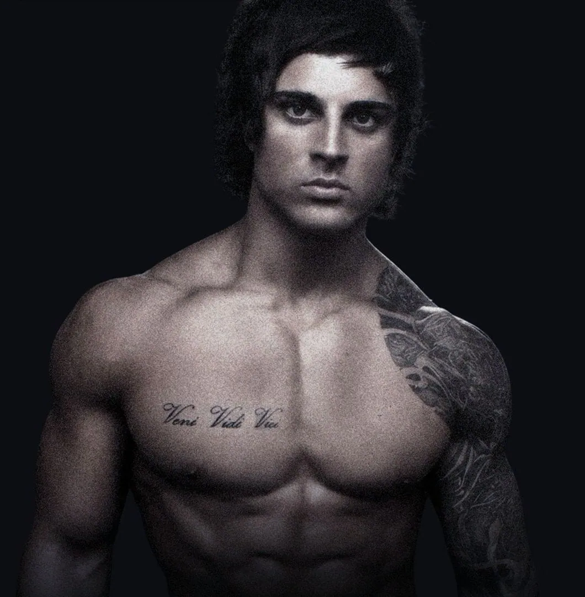
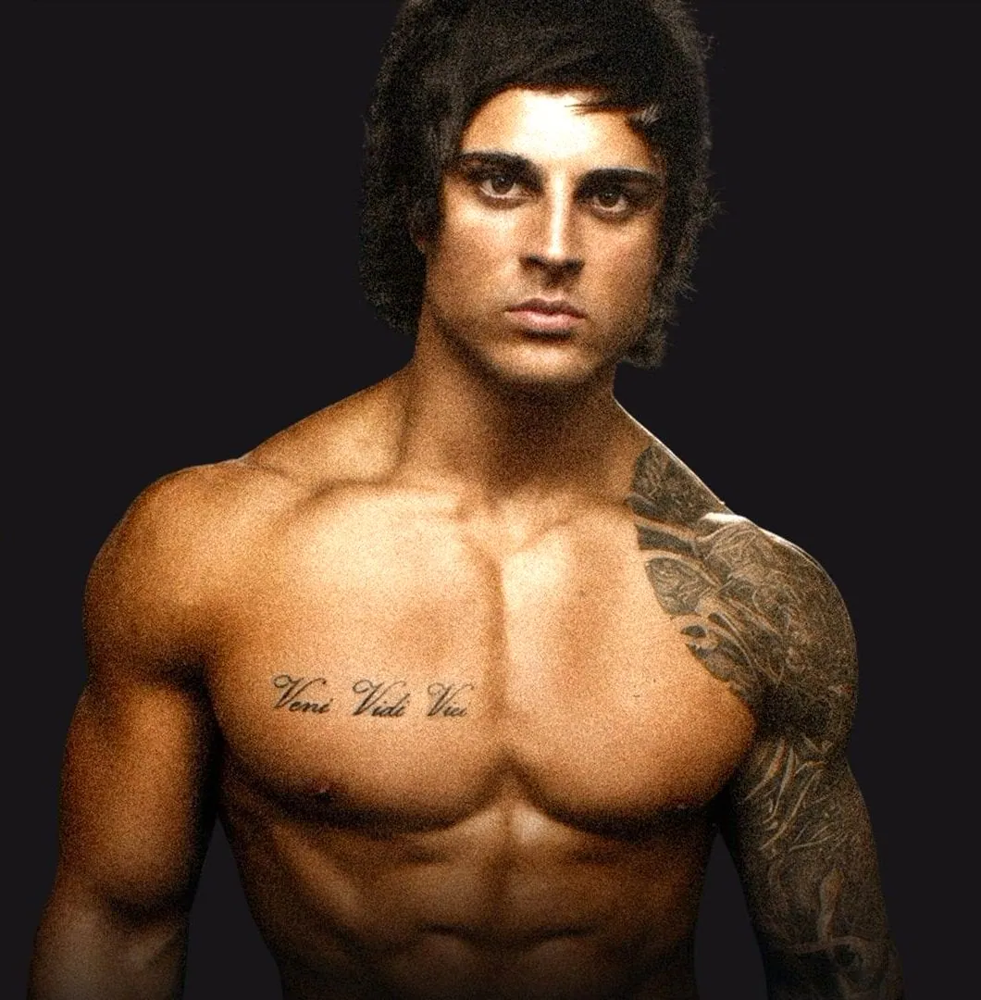
Zyzz 1989-2011 · o ícone da “estética”
TCA 2026 · Colégio Cristão Kairós
A influência dos padrões de beleza na vida dos jovens
Orientadora: Prof.ª Girlene da Silva Lima · Suzano, 2026
Por que esse tema importa?
“Nós pioramos os problemas de imagem corporal de uma em cada três adolescentes.”
clique pra revelar1 em 3
Wells; Horwitz; Seetharaman (2021) · The Wall Street Journal
A pergunta do trabalho: como os padrões de beleza são construídos e o que a pressão estética faz com os jovens?
A cor do fundo mostra quem está falando. Somos quatro alunos e os quatro treinam: a gente não é contra a academia, é contra a comparação.
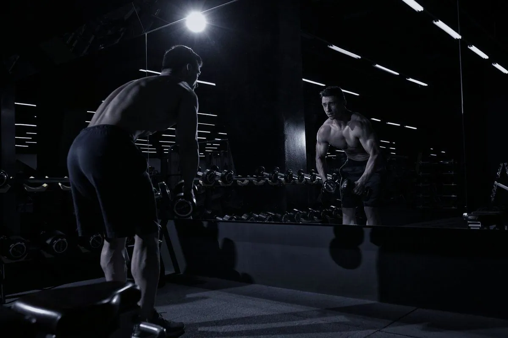
ombro cintura quadrilO corpo não é só biologia. A cultura ensina como ele deve ser.
Andar, nadar, marchar: tudo se aprende. E a gente imita quem tem prestígio. Hoje, o influenciador.
Nenhuma lei manda emagrecer. Mas o olhar dos outros, e o do espelho, vigia o tempo todo.
Mauss (2003) · Le Breton (2007) · Daolio (1995) · Foucault (2014)
O que é bonito muda com a época e com o lugar. A beleza nunca foi uma só.
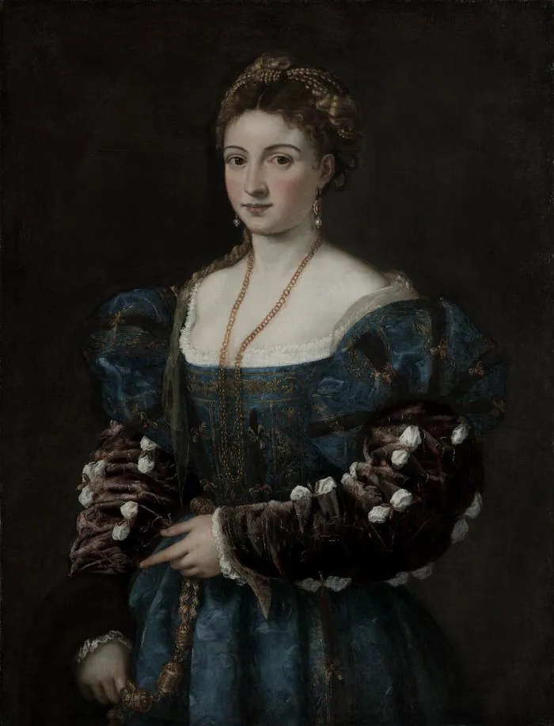
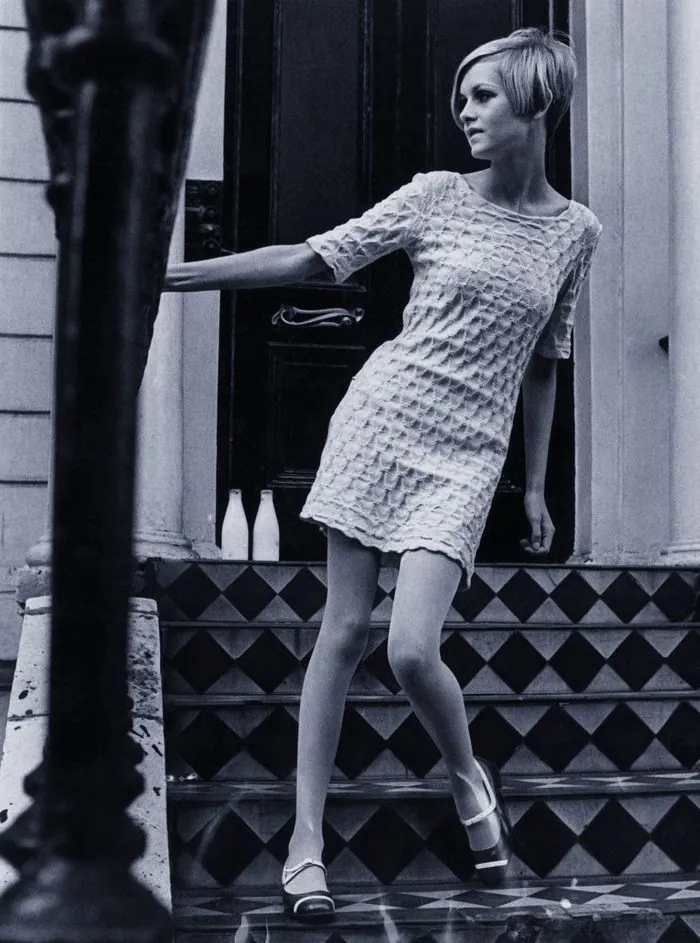
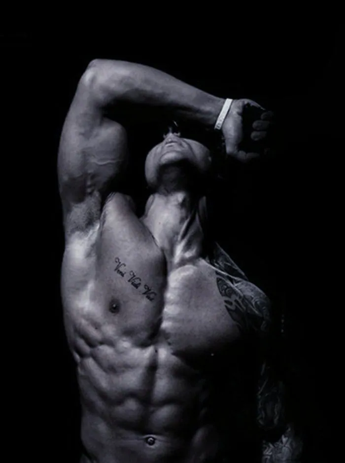
Eco (2004) · Sant'Anna (2014)
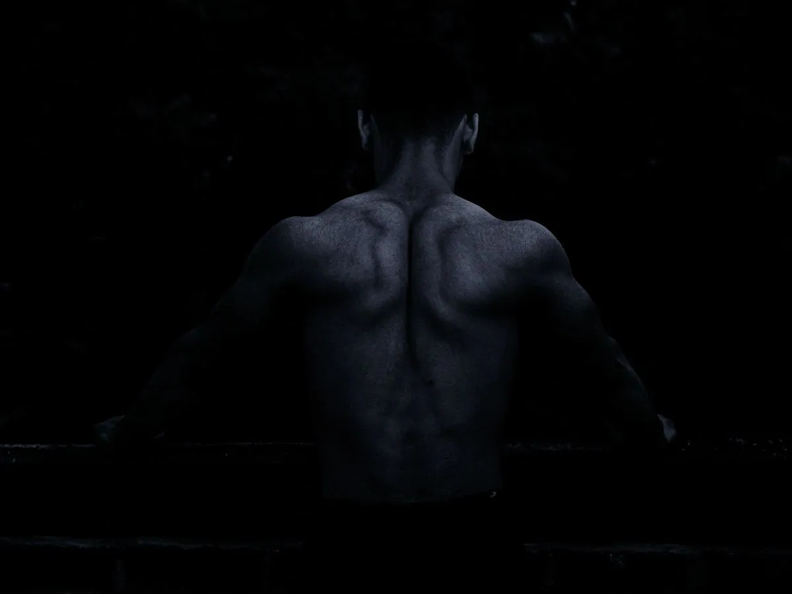
Um corpo que parece sempre alcançável, mas quase nunca é real.
Sant'Anna (2014) · Wolf (1992)
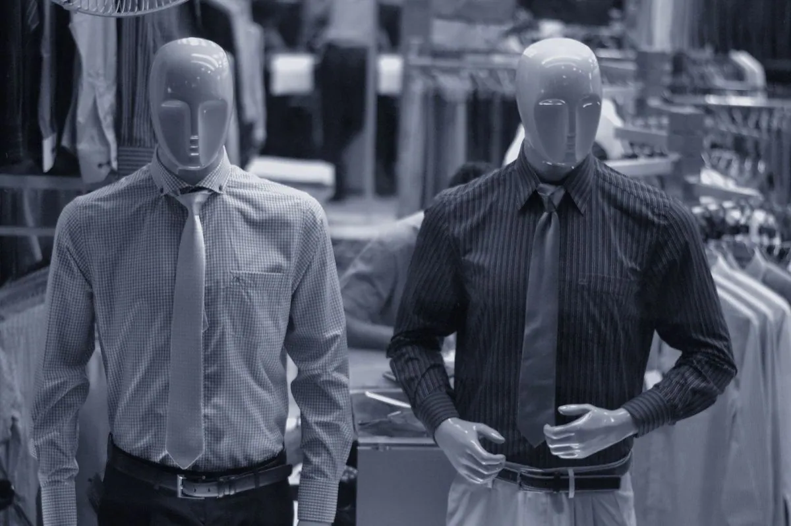
Na sociedade de consumo, o corpo é patrimônio: a gente investe tempo e dinheiro e exibe.
“O mais belo objeto de consumo.”
Baudrillard
“Parecer vale mais do que ser.”
Debord
No Brasil, o corpo em forma é capital: sinal de esforço, status e vantagem.
Goldenberg
Baudrillard (2008) · Debord (1997) · Sibilia (2016) · Goldenberg (2011)
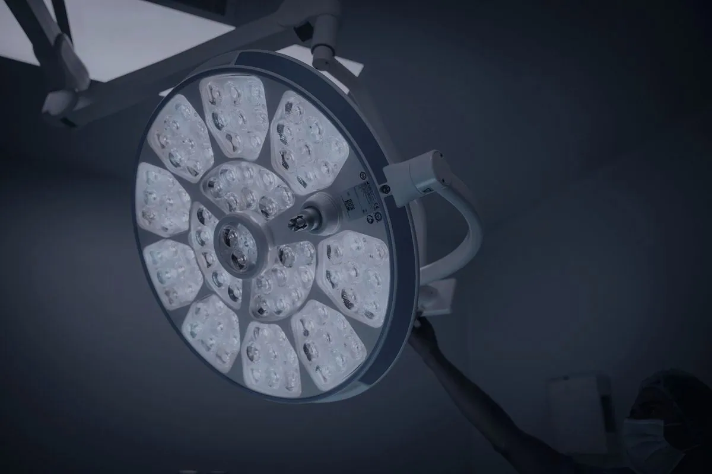
Em cirurgia plástica, ninguém faz mais do que a gente.
2,3milhões
de cirurgias plásticas em 2024 · 1º lugar no mundo
3,1 mi
procedimentos estéticos no total, atrás só dos EUA
Top 2
lipoaspiração e aumento de mamas foram as cirurgias mais feitas
ISAPS (2025) · Maraccini (2025), CNN Brasil
Antes o padrão vinha da TV e da revista. Hoje chega no celular, 24 horas por dia.
93%
83%
98%
81% dos jovens de 15 a 17 anos usam o Instagram
72% sabem que empresas pagam influenciador pra mostrar produto
TIC Kids Online Brasil 2024 (NIC.br, 2025)
1.479 jovens do Reino Unido avaliaram cinco redes sociais.
+ positivanegativa −
Royal Society for Public Health · RSPH (2017)
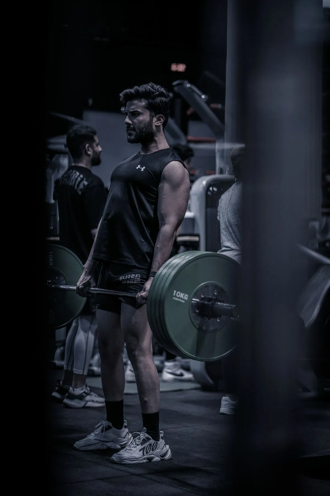
A gente se mede pelos outros. Na rede, o “outro” é a melhor foto de cem.
Festinger (1954) · Fardouly et al. (2015)
Estudo brasileiro com adolescentes: quanto mais rede, mais insatisfação com o corpo.
85,8%
insatisfeitas com o próprio corpo
65,1%
estavam com o peso adequado
Instagram mais de 10 vezes por dia: 4,47 vezes mais chance de insatisfação. Facebook: 6,57 vezes.
cada ponto é uma menina
Lira et al. (2017), Jornal Brasileiro de Psiquiatria
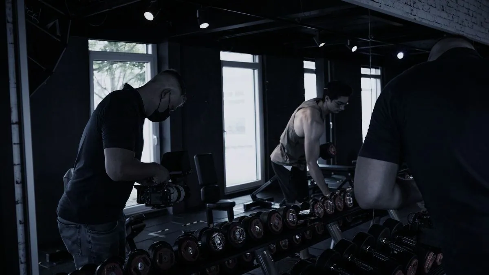
Toda foto de rede é uma escolha. Quem treina conhece esses truques.
contrair, girar, prender a respiração
luz de cima marca cada músculo
de baixo pra cima, o corpo cresce
afina, alisa e muda o formato
Mesma pessoa. Mesmo dia. Só mudou a luz.
Quem treina conhece esse truque.
Tendência “Alex Eubank Lighting” · TikTok e Instagram
arraste a alça pra comparar
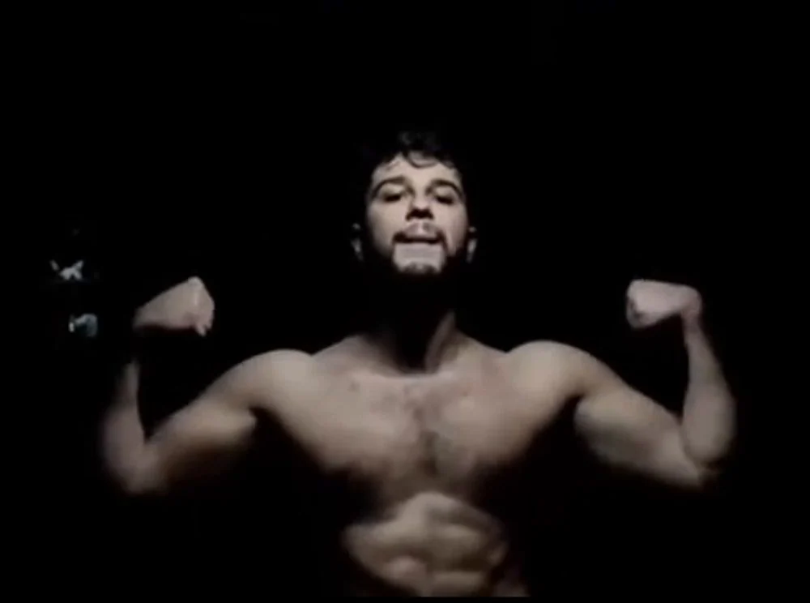
Luz comum Luz de cima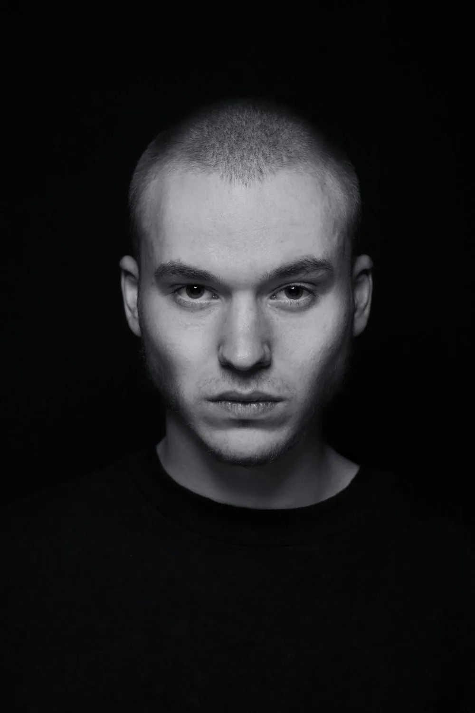
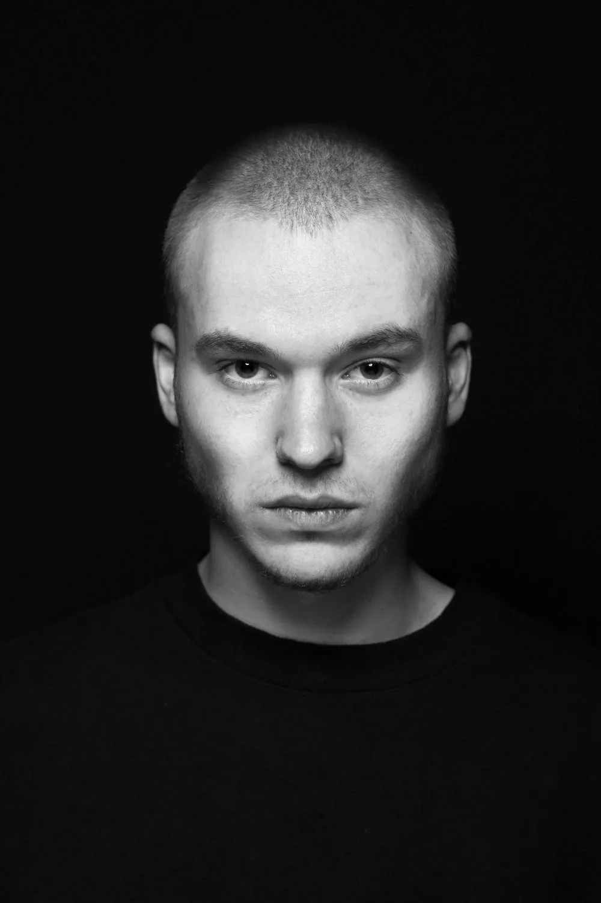
O filtro virou régua: a pessoa passa a se comparar com uma versão editada de si mesma.
55%
dos cirurgiões faciais nos EUA já atenderam gente querendo sair melhor na selfie. Os médicos chamam de “dismorfia do Snapchat”.
Rajanala; Maymone; Vashi (2018), JAMA Facial Plastic Surgery
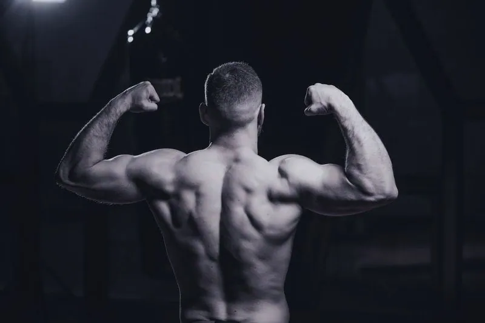
A pressão também pega os homens. A gente vê isso de perto na academia.
Pope; Phillips; Olivardia (2000) · APA, DSM-5 (2014)
Muito corpo de perfil de treino não vem só de treino e dieta.
Meninos do 9º ano que se acham magros ou muito magros
Antunes; Lisboa (2024)
40%
dos meninos ouvidos pelo Instagram viviam comparação negativa no app
14%
dos meninos nos EUA disseram que a rede os fazia se sentir pior
Wells; Horwitz; Seetharaman (2021)
CFM, Resolução 2.333/2023: médico não pode receitar anabolizante pra estética nem pra ganhar massa.
riscos: infarto · arritmia · fígado · infertilidade · depressão
CFM (2023)
Como os alunos do 9º ano enxergam o próprio corpo, em quatro edições da pesquisa do IBGE.
−12,5
pontos em dez anos na turma que se vê normal. Subiram os que se acham magros e os que se acham gordos.
| Ano | Normal | Magro ou muito magro | Gordo ou muito gordo |
|---|---|---|---|
| 2009 | 60,1 | 22,1 | 17,7 |
| 2012 | 61,9 | 21,9 | 16,3 |
| 2015 | 55,9 | 25,8 | 18,3 |
| 2019 | 47,6 | 28,6 | 23,2 |
Antunes; Lisboa (2024), Cadernos de Saúde Pública · dados da PeNSE/IBGE
Alunos do 9º ano em 2019: como cada um vê o próprio corpo (%).
Bate com o ideal de cada um: magreza pra elas, músculo pra eles.
No geral (13 a 17 anos), 75,5% dos meninos estão satisfeitos com o corpo. Entre as meninas, 31,4% estão insatisfeitas.
| Como percebe o corpo | Meninos | Meninas |
|---|---|---|
| Magro ou muito magro | 31,4 | 25,9 |
| Normal | 50,1 | 45,2 |
| Gordo ou muito gordo | 17,5 | 28,6 |
Antunes; Lisboa (2024) · IBGE, PeNSE 2019 (2021)
Quando a insatisfação é forte e dura muito, vira problema de saúde.
Anorexia, bulimia e compulsão: sofrimento com a comida, o peso e a forma do corpo.
Ver um defeito que os outros não veem, e checar o espelho o tempo todo.
23%
dos escolares sofreram. Os motivos mais citados:
Os transtornos têm várias causas, não só a mídia. Precisa de ajuda? Procure médico, psicólogo ou nutricionista.
APA, DSM-5 (2014) · IBGE, PeNSE 2019 (2021)
A gente treina, e defende o treino. O problema nunca foi o exercício.
Se a pressão é construída por todo mundo, a resposta também é.
Menos comentário sobre o corpo dos outros, até elogio. Mais conversa sobre o que se vê na rede.
A BNCC (EM13LGG502) pede análise crítica dos padrões nas práticas corporais. Roda de conversa e campanha contra bullying.
Lei 15.100/2025: celular na escola. Lei 15.211/2025 (ECA Digital): menos recurso viciante e sem publicidade por perfil pra menores.
Desconfiar da foto perfeita. Não entrar na piada sobre o corpo de ninguém. Treinar por saúde, não por like.
Brasil (2018) · Brasil (2025a; 2025b) · RSPH (2017)
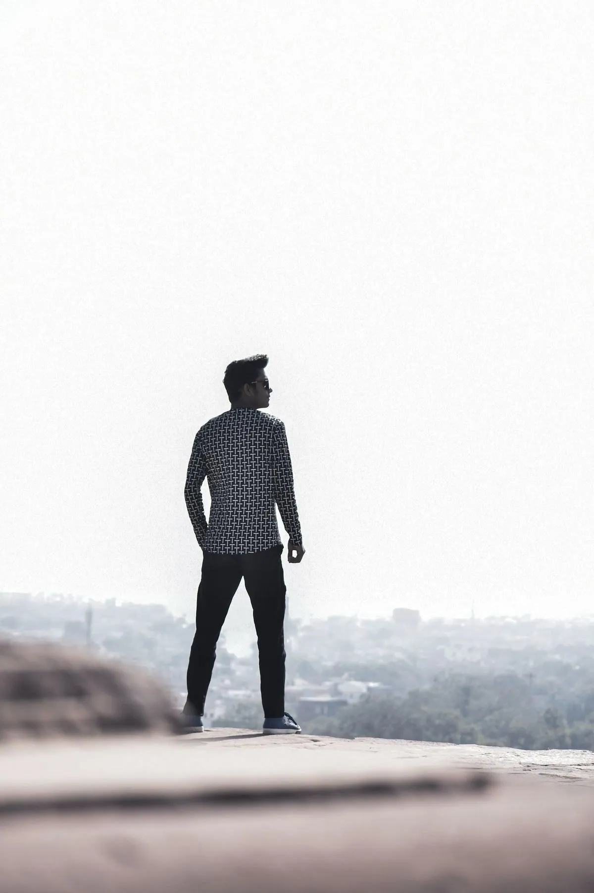
Nossa conclusão
O corpo é templo · 1 Coríntios 6:19
Cuidar do corpo, sim. Viver pela aprovação dos outros, não.
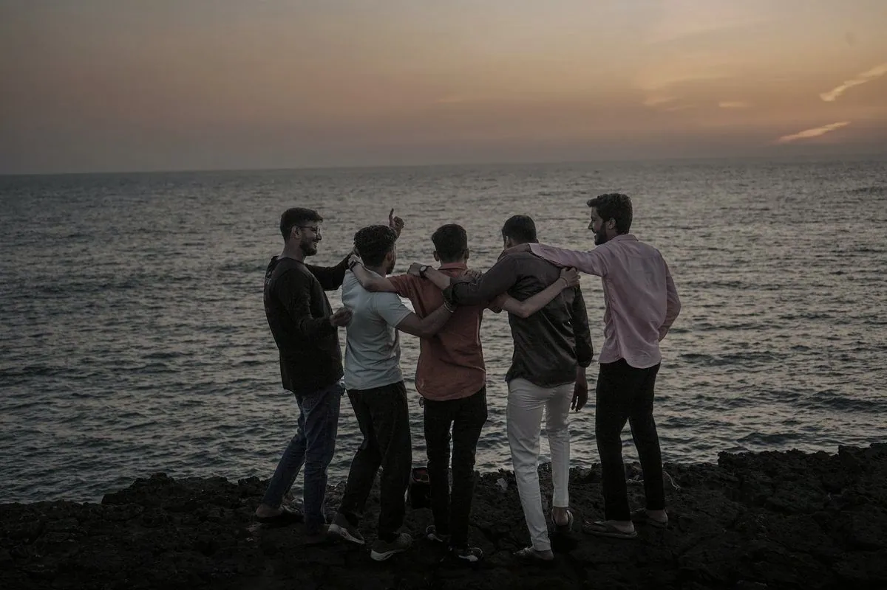
Perguntas?
Orientadora: Prof.ª Girlene da Silva Lima
Colégio Cristão Kairós · Suzano, 2026
“O homem vê a aparência, mas o Senhor vê o coração.”
1 Samuel 16:7